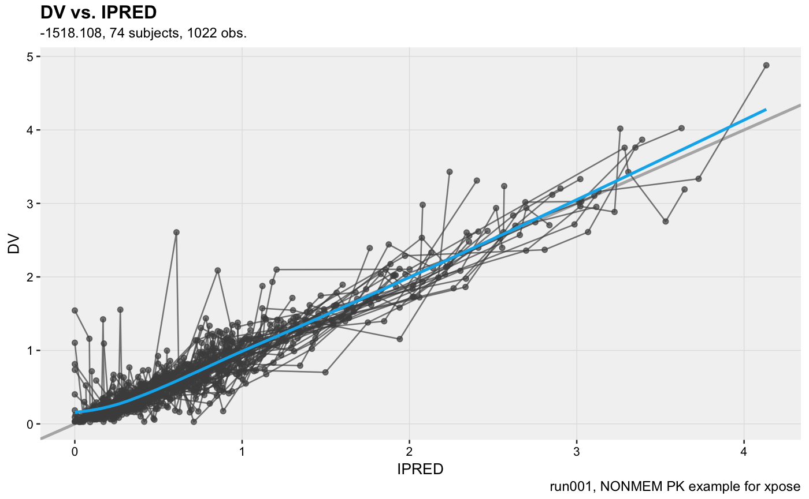
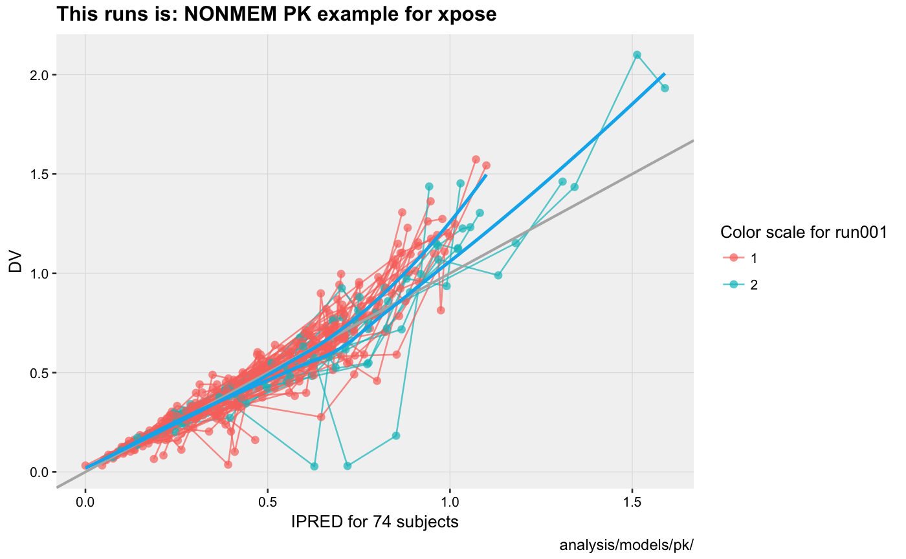

Template titles can be used to create highly informative diagnostics plots.
They can be applied to any plot title, subtitle, caption and the filename when saving
with the xpose_save function.
Template titles are defined via a single string containing key variables staring with a @ (e.g. @ofv) which will be replaced by their actual value when rendering the plot. For example '@run, @nobs observations in @nind subjects' would become 'run001, 1022 observations in 74 subjects'
Many key variables are available:
Condition number
Covariance matrix runtime
Model input data used
Model description
Model directory
Epsilon shrinkage
Run errors (e.g termination error)
ESAMPLE seed number (used in NPDE)
Eta shrinkage
Model file name
Model label
Estimation method or sim
Number of ESAMPLE (used in NPDE)
Number of individuals
Number of observations
Number of significant digits
Number of simulations
Objective function value
Are respectively the page number and the number of the last page when faceting on multiple pages
Problem number
Name of the plot function
Reference model
Model run name
Estimation/Sim runtime
Software used (e.g. NONMEM)
Simulation seed
Differential equation solver
Run start time
Run stop time
Time of the plot rendering
Termination message
Software version (e.g. 7.3)
VPC confidence interval
VPC data directory
VPC lower limit of quantification
Number of simulations for VPC
VPC prediction interval
VPC upper limit of quantification
Run warnings (e.g. boundary)
Name of any ggplot2 variable used for mapping in an aes() type function
# Defined when creating a plot dv_vs_ipred(xpdb_ex_pk, title = '@x vs. @y', subtitle = '@ofv, @nind subjects, @nobs obs.', caption = '@run, @descr')#>#># Any label can be modified later on dv_vs_ipred(xpdb_ex_pk, aes(point_color = SEX, line_color = SEX)) + labs(title = 'This runs is: @descr', color = 'Color scale for @run', x = 'IPRED for @nind subjects', subtitle = NULL)#>#>